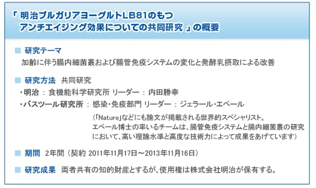

|
与巴斯德研究所开展乳酸菌共同研究明治公司与法国巴斯德研究所一起，从2011年11月起至2013年11月，以LB81乳酸菌为对象进行了2年的共同研究。该研究所仅与日本企业进行这种正式的大规模共同研究还是第一次。 当时人们对乳酸菌的认识主要在于乳酸菌可直接作用于肠道内细菌，促进有益菌的繁殖，防止有害菌的繁殖，从而改善肠道内细菌的生态平衡，即调节“肠道菌群”的平衡，对健康产生各种各样的影响。 以共同研究为契机，明治公司在这一认识的基础上，确认LB81乳酸菌对分布于肠道的免疫细胞起作用的同时，还确认肠道屏障功能※也有提高。 随着年龄增长和生活压力等因素的增加，肠道屏障功能一旦降低，肠上皮细胞便容易受到细菌、病毒和有害物质等的攻击，身体健康受到各种各样的威胁。LB81乳酸菌在调节肠道菌群平衡的同时，还可防止肠道屏障功能的降低。 以该共同研究为契机确认的LB81乳酸菌新的可能性，其详细内容在下面链接处介绍。 ※肠道屏障功能是指肠道功能免受与食物一起进入肠道的细菌、病毒以及肠道有害菌在代谢过程中产生的有害物质等侵蚀的保护功能 关于明治公司的乳酸菌研究明治公司从60多年前就开始研究乳酸菌，现在拥有5,000多类菌种。由于乳酸菌的组合不同，其风味、口感以及对身体的影响等也不同，所以我们每天都在认真研究，追求乳酸菌新的可能性。明治的乳酸菌研究，除发现了这次发表的LB81乳酸菌以外，还有可抑制幽门螺杆菌的乳酸菌OLL2716株；可对免疫功能起作用的乳酸菌1073R-1株等，发现了对人体健康可能起到各种积极作用的乳酸菌。  关于巴斯德研究所（Institut Pasteur）位于法国巴黎，主要从事生物学和医学研究的非营利研究机构。在近代细菌学奠基人路易·巴斯德的倡议下，于1887年以来自世界各地的捐款为主开设，巴斯德就任第一任所长。领导世界生物学、医学的研究，并开始研发狂犬病疫苗，近年来在乙肝疫苗的研发、HIV的分离等微生物、感染症、疫苗等基础和应用研究方面取得了举世瞩目的成就。到目前为止，拥有诺贝尔奖获奖者10人，其中包括梅奇尼科夫博士和近年来发现HIV病毒的巴尔·西诺西博士。通过mRNA遗传信息的发现等确立了分子遗传学基础概念的雅克·莫诺博士在1970年代担任所长。该研究所也致力于应用研究和研究成果的利用。因此，与企业的合作以实施共同研究为主，拥有研究开发能力和市场营销能力的大企业是其主要的合作伙伴。 |